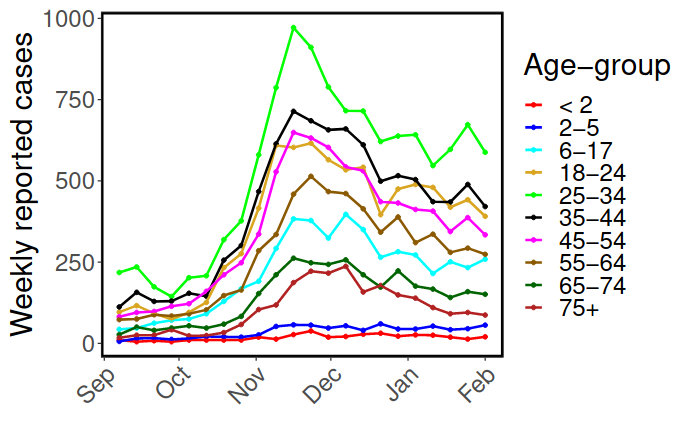
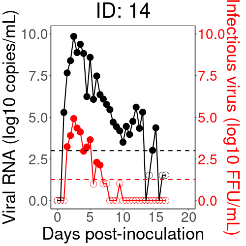

Research Overview
My research focuses on developing mathematical theory for studying
complex biological systems, with emphasis on quantitative frameworks that bridge
mathematical analysis and biological insight.
A central theme of my work is infectious disease modeling across
biological scales. This includes developing data-driven mathematical frameworks
for understanding disease dynamics at the population level, characterizing
within-host pathogen dynamics, and modeling the kinetics of immune responses
induced by infection. I am particularly interested in vaccine-induced immune
responses, including the dynamics of humoral immunity, germinal center reactions,
and the interplay between innate and adaptive immune responses across a range
of diseases.
I also develop quantitative systems pharmacology (QSP) models
to investigate biological systems in the context of drug development, linking
mechanistic models of biological processes to pharmacokinetic and
pharmacodynamic outcomes.
A second major focus of my research is first-passage processes and
reaction-diffusion systems for passive and active biological systems.
I am particularly interested in extending reaction-diffusion frameworks to
infectious disease modeling, developing and analyzing mathematical models that
capture not only disease transmission dynamics but also the spatial and
environmental factors that shape disease spread.
Mathematical and Computational Methods:
I develop models using ordinary differential equations (ODEs), partial
differential equations (PDEs), stochastic simulations, and agent-based modeling.
I also apply statistical and machine learning methods for model calibration,
parameter estimation, and data analysis. My analytical toolkit includes
dynamical systems theory, perturbation theory, asymptotic analysis, and
biophysical techniques. For numerical analysis, I employ finite difference,
finite element, and closest point methods.
Below are my research areas:
Reaction-Diffusion Systems and Multiscale Disease Modeling
Reaction-diffusion systems have been a cornerstone of mathematical biology, providing a powerful framework for studying spatial and temporal dynamics in biological systems, from Turing pattern formation and chemical signaling to the spread of invasive species and infectious diseases. In my research, I employ reaction-diffusion frameworks to study intercellular signaling and communication, as well as the spatial spread of infectious diseases through populations. A growing focus of my work is the development of multiscale reaction-diffusion frameworks that integrate disease dynamics across biological scales, including coupling within-host pathogen dynamics to population-level transmission, incorporating host movement and spatial heterogeneity into epidemic models, modeling cross-species and zoonotic transmission in coupled human and animal populations, and capturing environmental transmission pathways and vector-borne disease dynamics. Through these research directions, I aim to develop mathematically rigorous and biologically realistic frameworks that provide quantitative tools for understanding disease spread and informing public health intervention design.
Signalling compartments synchronizing through a shared bulk-diffusion field.
Selected articles and preprints on reaction-diffusion systems
First Passage Time (FPT) Theory
First-passage time (FPT) phenomena provide valuable insights into the timing and likelihood of rare or critical events in stochastic systems, with broad applications across biology, immunology, and disease dynamics. The mean first-passage time (MFPT) is a fundamental tool for quantifying the expected time for a random process to reach a target state for the first time, with important applications ranging from molecular transport and receptor-ligand binding kinetics to immune cell search processes, pathogen clearance, and the timing of disease outbreak initiation. My work focuses on developing analytical and computational frameworks for studying FPT phenomena in passive and active stochastic systems, with applications to both physical and biological settings. On the biological and immunological side, this includes modeling the time for immune cells such as T cells and dendritic cells to locate rare antigen-presenting targets in lymphoid tissues, quantifying the search time of antibodies for pathogen epitopes, and characterizing stochastic timing in early infection dynamics and within-host immune responses. Through rigorous mathematical analysis and computation, I aim to develop theoretical frameworks that provide mechanistic insights into FPT behavior in complex and constrained biological environments, ultimately informing our understanding of how timing shapes outcomes in immunological and disease processes.
A particle escaping a reflecting disk, hunted by a rotating absorbing trap.
Selected articles and preprints on MFPT theory
Infectious diseases modeling and immunology
Population-level infectious disease modelling
My research in population-level disease modeling focuses on developing data-driven mathematical frameworks to study the transmission dynamics of infectious diseases, including HIV, malaria, cholera, and COVID-19, evaluate the effectiveness of public health interventions, and inform policy decisions. A central theme of this work is understanding how adaptive human behaviour, including vaccine hesitancy, anti-authority resistance, and adherence to non-pharmaceutical interventions, shapes disease spread in a population. I am also committed to translating mathematical insights into actionable public health guidance, providing modeling support to public health officials and policymakers. During the COVID-19 pandemic, I contributed to this effort as a member of the COVID-19 PWIAS Working Groups: Mathematical Modelling to Understand COVID-19 Epidemic Dynamics in British Columbia.

Within-Host Infectious Disease Dynamics and Immunology
My research in within-host modeling focuses on developing mathematical frameworks to study the evolution of viruses, including HIV, SARS-CoV-2, HBV, HCV, and Ebola, within an infected host. Key areas of interest include characterizing viral infection kinetics and modeling the dynamics of innate and adaptive immune responses, including B and T cell dynamics during infection and vaccination. My current research at Fred Hutchinson Cancer Center focuses on developing a quantitative framework for understanding B cell dynamics during vaccine-induced humoral immune responses, with direct application to studying and optimizing germline-targeting and sequential immunization strategies for HIV vaccine development. I also develop quantitative systems pharmacology (QSP) models to support drug development, providing mathematical frameworks for evaluating antiviral drug efficacy, optimizing dosing strategies, and identifying therapeutic targets.

Susceptible → Infected → Recovered: individuals flowing through a population-level epidemic model.
Selected articles and preprints on infectious disease modeling and analysis
-
A multiscale model of the action of a capsid assembly modulator for the treatment of chronic hepatitis B Preprint
-
The kinetics of SARS-CoV-2 infection based on a human challenge study
List of all publications and preprints
-
Mathematical Representation of Adaptive Human Behavior in Mechanistic Epidemic Models: A Systematic Review Preprint
-
Mean first passage time of chiral active Brownian particles Preprint
-
Splitting probabilities of confined chiral active Brownian particles Preprint
-
A multiscale framework integrating within-host infection kinetics with airborne transmission dynamics Preprint
-
Mean first passage time of active Brownian particles in two dimensions Preprint
-
Inheritance of intracellular viral RNA in a multiscale model of hepatitis C infection Preprint
-
Understanding Cholera Dynamics in African Countries with Persistent Outbreaks: A Mathematical Modelling Approach Preprint
-
Leveraging Mathematical Modelling to Evaluate Malaria Vaccination Roll-out Strategies in Cameroon. Preprint
-
Pre-exposure vaccination in the high-risk population is crucial in controlling mpox resurgence in Canada. Preprint
-
Oscillatory instabilities in dynamically active signalling compartments coupled via bulk diffusion in a 3-D spherical domain. Preprint
-
Dynamics of Mpox in an HIV endemic community: A mathematical modelling approach.
-
Understanding early HIV-1 rebound dynamics following antiretroviral therapy interruption: The importance of effector cell expansion Preprint
-
A multiscale model of the action of a capsid assembly modulator for the treatment of chronic hepatitis B Preprint
-
The kinetics of SARS-CoV-2 infection based on a human challenge study
-
Understanding the impact of HIV on mpox transmission in an MSM population: a mathematical modeling study. Preprint
-
Regional variation and epidemiological insights in malaria underestimation in Cameroon. Preprint
-
Asymptotic analysis and simulation of mean first passage time for active Brownian particles in 1-D. Preprint
-
Quantifying the basic reproductionnumber and underestimated fraction ofMpox cases worldwide at the onset ofthe outbreak. Preprint
-
The determinants of malaria transmission and mortality rates in Africa: A cross-country Analysis.
-
Understanding the impact of mobility on COVID-19 spread: a hybrid gravity-metapopulation model of COVID-19 Preprint
-
A generalized distributed delay model of COVID-19: an endemic model with immunity waning Preprint
-
Adaptive changes in sexual behavior in the high-risk population in response to human monkeypox transmission in Canada can control the outbreak: insights from a two-group, two-route epidemic model Preprint
-
Knowing the unknown: the underestimation of monkeypox cases. Insights and implications from an integrative review of the literature Preprint
-
Association between close interpersonal contact and vaccine hesitancy: findings from a population-based survey in Canada Preprint
-
The basic reproduction number of COVID-19 across Africa Preprint
-
Impact of routine asymptomatic screening on COVID-19 incidence in a highly vaccinated university population Preprint
-
Mathematical modeling of COVID-19 in British Columbia: an age-structured model with time-dependent contact rates Preprint
-
Effect of human mobility on the spatial spread of airborne diseases: an epidemic model with indirect transmission Preprint
-
Social contacts and transmission of COVID-19 in British Columbia, Canada Preprint
-
Assessing the potential impact of immunity waning on the dynamics of COVID-19: an endemic model of COVID-19 Preprint
-
Cohort profile: the British Columbia COVID-19 Population Mixing Patterns Survey(BC-Mix) Preprint
-
Assessing the impact of adherence to Non-pharmaceutical interventions and indirect transmission on the dynamics of COVID-19: a mathematical modelling study Preprint
-
Modeling the potential impact of indirect transmission on COVID-19 epidemic. Preprint
-
Quantifying transmissibility of COVID-19 and impact of intervention within long-term health care facilities. Preprint
-
Importance of COVID-19 vaccine efficacy in older age groups. Preprint
-
Asymptotics of the Principal Eigenvalue of the Laplacian in 2-D Periodic Domains with Small Traps. Preprint
-
Synchronous Oscillations for a Coupled Cell-Bulk PDE-ODE model with Localized Cells on R^2. Preprint
-
Pattern Forming Systems Coupling Linear Bulk Diffusion to Dynamically Active Membranes or Cells: Modeling, Analysis, and Computation. Preprint
-
Asymptotic Analysis for the Mean First Passage Time in Finite or Spatially Periodic2-D Domains with a Cluster of Small Traps. Preprint
-
Synchrony and Oscillatory Dynamics for a 2-D PDE-ODE Model of Diffusion-Mediated Communication Between Small Signaling Compartments Preprint
-
How much leeway is there to relax COVID-19 control measures? Preprint
-
Localized Signaling Compartments in 2-D Coupled by a Bulk Diffusion Field: Quorum Sensing and Synchronous Oscillations in the Well-Mixed Limit Preprint
-
Quantifying the impact of COVID-19 control measures using a Bayesian model of physical distancing Preprint
-
Optimization of the Mean First Passage Time in Near-Disk and Elliptical Domains in 2-D with Small Absorbing Traps Preprint
-
A novel approach to modelling the spatial spread of airborne diseases: an epidemic model with indirect transmission. Preprint
-
Simulation and Optimization of Mean First Passage Time problem in 2-D using Numerical Embedded methods and perturbation Theory. Preprint
Some Talks and Posters
-
Contributed talk: Mathematical Physiology I
-
Mini-symposium: First Passage Phenomena in Brownian and Active Matter
-
Modelling post-infection effects of Pathogens: epidemiology, evolution, and public health implications
-
Joint Mathematics Meetings (JMM) 2025
-
Computational and Mathematical Population Dynamics 6 (CMPD6)
-
International Conference on Mathematical Modeling and Analysis of Populations in Biological Systems (ICMA-VIII).
-
Canadian Institutes of Health Research (CIHR) multi-province COVID modeling full-team meetings, April 2022.
-
Society for Mathematical Biology conference, SMB2021.
-
Scientific Computing meets Machines Learning and Life Sciences conference, Texas Tech University, Oct. 2019.
-
Conference on Multicscale Modeling in Biology, University of Minnesota, May 20-22 2019.
-
Mathematical Biology seminar at UBC, Nov. 2018.
-
Annual Institute of Applied Mathematics (IAM) retreat, B.C. April 2018.
-
Workshop on numerical methods for Surface PDES, Loon lake, B.C. June 2017.
-
Graduate Summit in Mathematical Biology and Applied PDE, Jasper, Alberta May 2017.